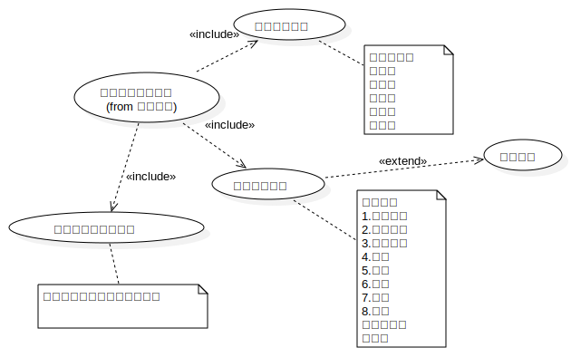
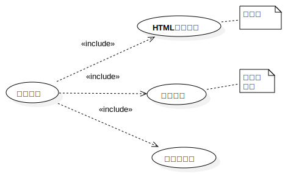

用例视图
UMLModel
uranus
::
用例视图
Description
none
Diagrams
uranus 顶级用例
微信用例-1级
微博用例-1级

公共媒体-1级

文章分析器-1级
Properties
Name
Value
name
用例视图
stereotype
null
visibility
public
importedElements
viewpoint
Owned Elements
uranus 顶级用例
采集数据
采集微信数据
采集微博数据
采集公共媒体文章
采集自媒体数据
gaia
微信用例-1级
微博用例-1级
公共媒体-1级
收集微信文章数据
采集微信自媒体信息
文章静态数据
文章动态数据
采集微博文章数据
采集微博媒体数据
采集微博媒体静态数据
微博媒体动态数据
微博动态数据
微博静态数据
文章静态数据
文章动态数据
自动收录微信文章
自动收录24小内媒体文章
收录媒体的最新文章
文章分析器-1级
HTML数据处理
关键词检索
正文分析
文章分析